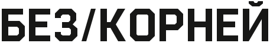

Два имени.
Два характера.
Оба знака отрисованы в кириллице. Ниже они показаны в одинаковом масштабе, с пояснением профиля студии и в малом размере.

Студия искусственного озеленения


БЕЗ КОРНЕЙ
Скошенные углы и красный слеш напоминают архитектурный разрез. В шапке работает одна строка, на обложке — два яруса, в аватаре — монограмма «БК».
Название звучит смелее и быстрее подводит к материалу. Рядом с логотипом стоит держать пояснение о студии, чтобы смысл считывался с первого взгляда.


Студия искусственного озеленения

НЕСЕЗОН
Ровный ритм прямых штрихов и круглых букв напоминает название архитектурного журнала. Терракотовая точка переходит из словесного знака в компактную иконку.
Название короче и мягче по тону. Оно передаёт идею композиции вне календаря. Профиль студии раскрывают пояснение и фотография работы.